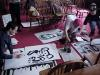
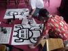
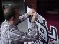
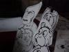
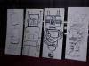
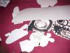
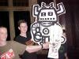

caption >> caption 2001 >> Damian's photos >> Badges
Caption, Oxford's annual small-press comics convention, was held in the Oxford Union Society, Oxford, England on the 18th and 19th of August 2001.
(Click on pictures for a larger version.)
 The James Kochalka Puppet Theatre are a couple of guys from Bristol, Andy Richmond and Richard Starzeki, who do crazy things with James Kochalka songs. Before the James Kochalka Puppet Theatre can perform, they have to build their giant cardboard puppets.  At CAPTION they invited random artists from the bar to help them out. They had a list of how many puppets they would need -- so many robots, so many monkeys, a Kurt, a Courtney, ... the venue was the dining room of the Oxford Union Society, so these white cardboard slabs were being drawn on in very posh surroundings.
 Once painted, they have to be cut out and organized in to piles. Cutting them out turns out to be quite a chore, since cardboard is tough and our cutting implements were small.  The biggest piles are naturally the monkeys and the robots.  The Monkey Versus Robot dance als needs scientists, tanks, children, and a whole lot of other characters.
Alas! We can't show you the performance itself here because (a) the camera I was using cannot work in such low light levels, and (b) it is much more fun to watch when you aren't trying to take photos. And those who have never witnessed the comedy miracle of two grown men slugging each other with giant cardboard monkeys and robots, well, you had to be there.  What we can show you is the aftermath, with tattered puppets scattered about the stage after their violent reckoning with destiny. Afterwards the audience snuck up to make off with any of the robots that still looked intact enough. 
Last modified 2005-07-18 |
<webmaster>


{kind=link}
{kind=link}
{kind=link}
{kind=link}
{kind=link}
{kind=link}
{kind=link}